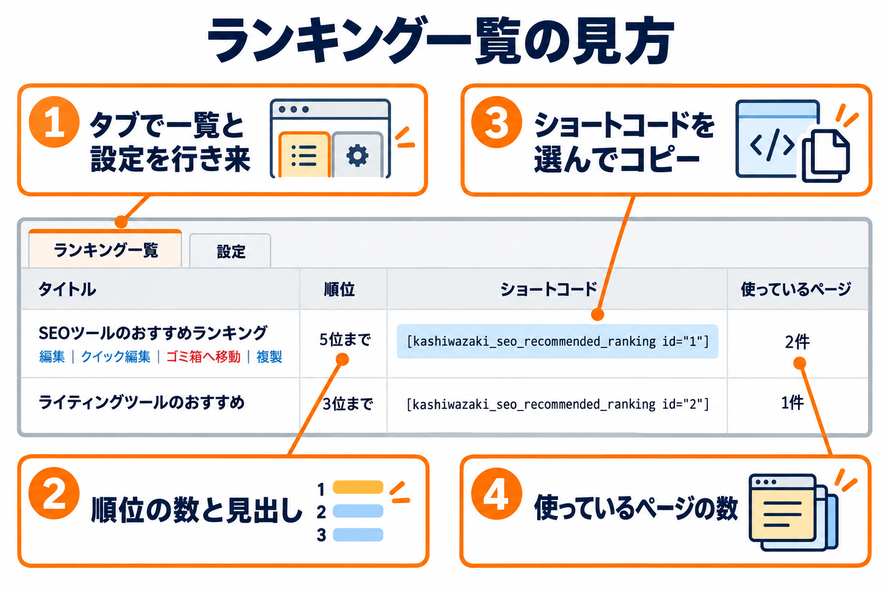
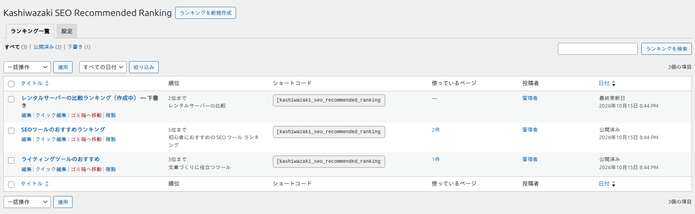
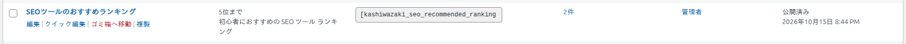
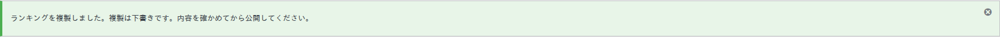

ランキング一覧
つくったランキングを一覧で見て、開く・複製する・ショートコードをコピーするための画面です。

開き方
管理画面の左メニューの「Kashiwazaki SEO Recommended Ranking」をクリックします。プラグイン一覧の「ランキング一覧」のリンクからも開けます。

画面の構成
| 場所 | 説明 |
|---|---|
| 見出しの横の「ランキングを新規作成」 | 新しいランキングの作成画面を開きます。 |
| タブ「ランキング一覧」「設定」 | 見出しの下にあります。一覧と設定を 1 クリックで行き来します。「設定」のタブは、管理者だけに表示されます。 |
| 絞り込みのリンク | 「すべて」「公開済み」「下書き」など、状態ごとに絞り込みます（WordPress の標準の機能です。ゴミ箱に入れたランキングがあるときは「ゴミ箱」も出ます）。 |
| 検索「ランキングを検索」 | 管理用の名前などから探します。 |
| 一括操作・日付の絞り込み | 複数のランキングをまとめてゴミ箱に移動する、日付で絞り込むなど（WordPress の標準の機能です）。 |
列の説明
| 列 | 表示される内容 |
|---|---|
| タイトル | ランキングの管理用の名前です。公開以外の状態（下書きなど）のときは、名前のあとに状態が付きます。 |
| 順位 | 「5位まで」のように、名称が入力されている順位の数が出ます。見出しを入力しているときは、その下に見出しも出ます。ランキングの中身を見る権限がない場合（ほかの人の下書きなど）は「—」が出ます。 |
| ショートコード | そのランキングを本文に置くためのショートコードです。欄をクリックすると全体が選択されるので、そのままコピーできます（書き換えられない欄です）。 |
| 使っているページ | そのランキングを選んでいる、またはショートコードで置いているページの数が「2件」のように出ます。表示位置を「表示しない」にしたページも、ランキングを選んでいれば数えます（ゴミ箱に入ったページは数えません）。同じページは 1 件です。クリックすると、そのランキングの編集画面の「使っているページ」を開きます。使われていないときは「—」です。 |
| 作成者・日付 | WordPress の標準の列です（ほかのプラグインが列を足すこともあります）。 |
行の操作
タイトルにマウスを乗せると、タイトルの下に操作が出ます。

| 操作 | 動き |
|---|---|
| 編集 | ランキングの編集画面を開きます。 |
| クイック編集 | 一覧の中で、管理用の名前や公開の状態などを変えます（WordPress の標準の機能です）。 |
| ゴミ箱へ移動 | ランキングをゴミ箱に入れます。ゴミ箱に入ったランキングは、ページには表示されなくなります。ゴミ箱から戻すと、また表示されます。 |
| 複製 | そのランキングのコピーを、下書きでつくります。 |
複製のしかた
1
複製したいランキングのタイトルにマウスを乗せ、「複製」をクリックします。
2
コピーの編集画面が開きます。管理用の名前は「（もとの名前） のコピー」になり、状態は下書きです。
3
内容を確かめて、変えたいところを直し、「公開」します。

- コピーされるのは、ランキングの内容（見出し・見出しの種類・概要説明・順位）と、デザイン・ボタン・リンク・構造化データの設定です。
- もとのランキングを選んでいたページの選択は、コピーされません。コピーを使うページには、あらためて選んでください。
- 複製できるのは、そのランキングを編集でき、新しくランキングをつくる権限のある人です。ゴミ箱に入っているランキングは複製できません。
メッセージの一覧
ランキングを保存・操作したあとに、画面の上に出るメッセージです。
保存したとき
| メッセージ | いつ出るか |
|---|---|
| ランキングを更新しました。 | 公開中のランキングを更新したとき。 |
| ランキングを公開しました。設置したページに表示されます。 | ランキングを公開したとき。 |
| ランキングを保存しました。 | 公開・予約・下書き・レビュー待ちのどれにも当てはまらない保存のとき（非公開など）。 |
| ランキングの下書きを保存しました。 | 下書きとして保存したとき。 |
| ランキングの公開を予約しました。 | 公開の日時を未来にして保存したとき。 |
| ランキングをレビュー待ちにしました。 | レビュー待ちとして保存したとき（公開の権限のない人）。 |
| リビジョンから復元しました。 | 過去の保存の状態に戻したとき。 |
| カスタムフィールドを更新しました。／カスタムフィールドを削除しました。 | WordPress の「カスタムフィールド」の欄を使って、項目を更新・削除したとき（WordPress の標準のメッセージです）。ふだんは出ません。 |
公開しようとして条件に足りなかったときのメッセージは、ランキングの内容のページにまとめています。
一覧で、まとめて操作したとき
| メッセージ | いつ出るか |
|---|---|
| N件のランキングを更新しました。 | 一括編集で更新したとき。 |
| N件のランキングは、ほかの人が編集中のため更新しませんでした。 | 一括編集のとき、別の人が編集中のランキングがあったとき。 |
| N件のランキングをゴミ箱へ移動しました。 | ゴミ箱へ移動したとき。 |
| N件のランキングをゴミ箱から復元しました。 | ゴミ箱から戻したとき。 |
| N件のランキングを完全に削除しました。 | ゴミ箱から完全に削除したとき。 |
複製のとき
| メッセージ | いつ出るか |
|---|---|
| ランキングを複製しました。複製は下書きです。内容を確かめてから公開してください。 | 複製に成功したとき。 |
| 複製するランキングが見つかりません。 | 複製のもとのランキングが無い、またはゴミ箱に入っているとき。 |
| このランキングを複製する権限がありません。 | そのランキングを編集できない人、またはランキングをつくる権限のない人が複製しようとしたとき。 |
| 複製できませんでした。 | コピーの保存に失敗したとき。 |
空のとき
- ランキングが 1 つも無いときは「ランキングがありません」と出ます。
- ゴミ箱が空のときは「ゴミ箱にランキングはありません」と出ます。
ランキングを更新・削除したときの動き
- ランキングを更新・ゴミ箱へ移動・ゴミ箱から復元すると、そのランキングを使っているページの表示が、その内容に変わります（ページのキャッシュを使うプラグインがある場合も、そのページのキャッシュを消す合図を出します）。
- ゴミ箱を通さず完全に削除すると、そのランキングを選んでいたページの選択が外れます。